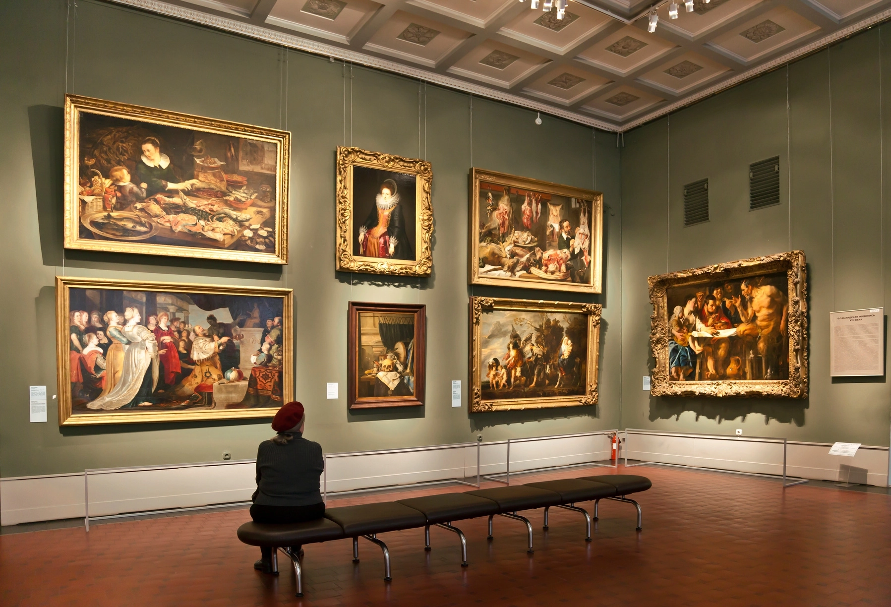
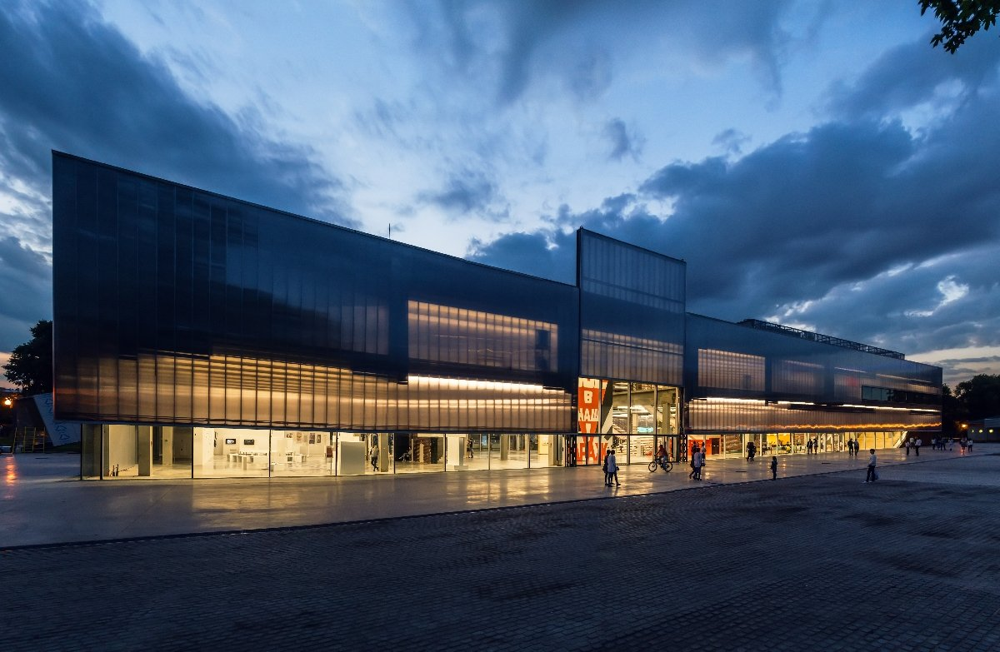

KNOWLEDGE REPRESENTATION & EXTRACTION · UNIVERSITY OF BOLOGNA
Institutional Pivot in Russian Museum Discourse
A Knowledge Engineering Study of Exhibition Policy Transformation
Abstract
This project analyzes the structural shift in exhibition policy at the Pushkin Museum and Tretyakov Gallery before and after 2022. Using semantic ontologies and knowledge graphs, we quantify how Russian museums repositioned their institutional identity from "Global Cultural Hub" to "Archival/Provenance-focused Institution".
Data Sources
- Pushkin Museum Archive
- Tretyakov Gallery Archive
- Open news and critical sources
Acknowledgement
Supervised by Prof. Aldo Gangemi. We acknowledge the guidance and methodological frameworks provided in translating tacit curatorial knowledge into formal semantic representations.
Data Map & Conceptual Model
Knowledge Extraction Goal
By modeling the shift from Object-Loan-from-Foreign-Museum to Object-from-Internal-Reserve, we quantify this "Institutional Pivot" as a graph transformation — revealing how museums repositioned their identity from a Global Hub to an Archival Institution.
Entities & Relations
Exhibition
Institution
Curator
Artistic_Movement
Origin_of_Artworks
Theme
Tacit Knowledge Extraction: Pushkin Museum
Pre-2022
"The Morozov Collection" — Linked to the Louis Vuitton Foundation. Modeled as a node in a Transnational Network representing "Global Cultural Exchange".
Post-2022
"After Impressionism" (2023) — Modeled as a node in an Intra-National / Provenance-focused Network, utilizing domestic collections.
Exhibition Analytics
Quantifying the thematic pivot across 400 exhibitions, 2014–2026
Every exhibition record from the Tretyakov Gallery and Pushkin Museum was classified into one of three idea blocks — Western Art, Eastern Art and National Russian Art. Plotted year by year, the corpus shows a clear structural break: after 2022, national and eastern themes come to dominate the programme where Western art once led.
Dynamics of Exhibition Cultural Focus
Click a legend item to isolate a theme · hover or tap a bar for the year's breakdown · click a period below to compare eras
Reading the Pivot
Before 2022, Western art anchored roughly a third of every year's programme, on par with national and eastern themes combined. From 2023 onward, that balance inverts: National Russian Art becomes the single largest block in every post-2022 year, and Eastern Art holds steady or grows, while Western Art's share shrinks by more than a third. 2022 itself sits as a transition year in the dataset — already tilted toward national themes, but not yet at the post-2022 peak.
final_analysis_fixed.csv
400 exhibition records · Tretyakov Gallery & Pushkin Museum · 2014–2026 · title, dates, source URL and thematic category for every entry.
From Corpus to Concepts: Extracting Themes
Classifying exhibitions by idea block is only half the picture. To see which words defined museum discourse before and after 2022, we needed a second pipeline — one that took four attempts to get right.
Ollama Summarization
Each scraped exhibition page was passed through Ollama to produce a short, clean description — compressing noisy scraped HTML down to its curatorial essence, so later steps could work with clean text rather than raw web clutter.
BERTopic (attempted)
Topic modeling with BERTopic came next, but the output was dominated by noise: articles, stopwords and other low-signal tokens crowded out the actual themes.
Ollama Tag Extraction (attempted)
We returned to Ollama to extract tags directly, but hit a different wall: the volume of text per record was too heavy for the model to summarize reliably at full corpus scale.
TF-IDF Vector Analysis (adopted)
The method that held up: a TF-IDF vector analysis across the pre- and post-2022 sub-corpora, yielding a frequency-weighted score for every term — the results plotted below.
Keyword Shift: Before vs. After 2022
Hover a bar for its exact weight · click a keyword to compare it across periods · click the share chart to see the underlying record counts
National Component Share
Top Keywords (TF-IDF Weight)
What the Keywords Tell Us
"Unique" — the top discriminating word in pre-2022 discourse — disappears entirely from the post-2022 vocabulary. In its place: institutional and historical markers like century (the single highest-weighted term after 2022) and named institutions such as tretyakov. The vocabulary shifts from claims of individuality toward claims of institutional history and heritage.
Full Keyword Extraction (TF-IDF)
The complete term list behind the chart above. Russian-language terms from the bilingual corpus are marked RU and kept as separate entries, since they carry their own weight in the source text.
Before 2022 202 exhibitions
After 2022 198 exhibitions
The National Pivot, Quantified
Records with a national/Russian component rose from 45 of 202 (22.3%) before 2022 to 71 of 198 (35.9%) after — more than a 1.5× increase in share. A jump of 13.6 percentage points across a corpus of nearly 400 documents isn't noise; it's a systemic shift in curatorial agenda. Together with the keyword shift above, this supports our central claim: the post-2022 pivot is a pivot toward nationalization — institutions doubling down on their own history and significance rather than global exchange.

CASE STUDY · CONTEMPORARY ART
The Contemporary Vector
Reading the national pivot through the Garage Museum of Contemporary Art
Garage has no historical exhibition calendar to fall back on: unlike the Tretyakov Gallery and Pushkin Museum, it does not stage a steady programme of new exhibitions, which would make an exhibition-by-exhibition analysis unreliable. Instead, we analyzed the museum's own news publications — 369 in total — as the clearest record of what the institution chooses to say about itself, year by year.
Classifying a Contemporary Institution
Publications don't carry a ready-made theme label the way exhibition titles do, so each entry had to be categorized into the same three idea blocks used for Tretyakov and Pushkin — National Russian, Western, and Eastern art.
Zero-Shot Classification
Every publication was categorized with a zero-shot classification model, mDeBERTa-v3, assigning each entry to National, Western or Eastern art without any task-specific training on this corpus.
Verification on a Control Sample
Results were checked against a manually-labeled control sample of 21 entries. Automatic classification reached 66.6% accuracy at an 81% coverage rate; the errors traced mainly to short text fragments that lacked enough context for the model to work with.
Expert Manual Review (adopted)
The final database was supplemented by expert manual review across the full corpus, raising categorization accuracy to 100% — the results plotted below are drawn from this reviewed dataset.
Category Balance: Before vs. After 2022
Click a legend swatch to isolate a period · hover or click a bar for its exact share
Institutional Transformation: A Data-Driven Conclusion
The statistical shift between the periods before and after 2022 reveals a profound transformation in the museum's institutional strategy:
- Consolidation of the National Focus — the increase in the share of National Russian Art from 79.4% to 96.6% indicates a near-total alignment with domestic cultural production, positioning the museum as the primary platform for Russian contemporary art in the absence of international exchange.
- Complete Erosion of the Western Vector — the decline of Western Art representation from 15.6% to 0.0% is a quantitative indicator of the abrupt cessation of international collaborations, marking the formal end of the museum's previous role as a bridge between the global Western art market and the Russian scene.
- Marginalization of the “Pivot to the East” — despite broader geopolitical discourse around a shift toward Asian markets, Eastern Art actually decreased from 5.0% to 3.4%, suggesting that within Garage's own programming, the “Pivot to the East” remains an aspirational concept rather than an implemented institutional reality.
The data quantifies Garage's transition from a globally integrated cultural institution to a localized entity, characterized by a near-exclusive focus on national artistic production.
Reading the Shift: Selected Publications
Three publications from each period, translated to English, illustrate the pivot in the museum's own words.
Before 2022 Global engagement
From Global Bridge to National Platform
The data indicates a fundamental institutional pivot: the Garage Museum has transitioned from a globally integrated platform for international cultural exchange into a localized entity focused almost exclusively on the consolidation of national art. The complete cessation of Western-oriented programming, paired with the new strategic emphasis on forming a domestic collection, underscores a survival strategy centered on internal cultural preservation. Ultimately, the museum's current activities reflect a shift from being a bridge to the global art world to becoming a primary site for the institutionalization of the Russian contemporary scene.
Ontology & Graph Representation
Methodological Approach
We use a subset of the full dataset (3–5 representative examples) to model the schema before scaling to 500+ exhibition records. The "pivot" is encoded as a measurable graph property: the dramatic shift in the ratio of International_Loan nodes to Internal_Reserve nodes post-2022.
Core Schema
Temporal Axis: Network Poles
The Morozov Collection
Pushkin Museum
After Impressionism
Pushkin Museum (2023)
Asian Cultural Exchange
Multiple Institutions
Knowledge Graph
A graph representation of the institutional pivot in Russian museum exhibition policy
About this graph
This knowledge graph encodes exhibition events from the Pushkin Museum and Tretyakov Gallery as nodes, connected by semantic relationships. The critical axis is temporal: pre-2022 nodes cluster around international loan relationships; post-2022 nodes shift toward internal archive provenance.
Graph Transformation
The structural pivot is measurable as a graph transformation: the ratio of edges typed borrowedFrom:ForeignInstitution to hasOrigin:InternalReserve inverts after 2022. This graph property encodes what we call the Institutional Pivot — a shift from a transnational network identity to an archival, provenance-centered one.
Methodology
How we extract and represent tacit institutional knowledge
Research Team
Project Lead
Student Researcher
Master's / PhD Candidate in Knowledge Engineering
Supervisor
Prof. Aldo Gangemi
Professor at University of Bologna
Expert in knowledge engineering and semantic web. We thank Prof. Gangemi for his feedback on our data map and conceptual model, which shaped the direction of this research.
Institutions
- University of Bologna
- [Student's University]

About This Project
This site presents a structured academic response to the challenge of modeling tacit institutional knowledge. Rather than manually cataloguing all 500+ exhibition records upfront, we demonstrate the approach on a set of 3-5 representative cases, then outline the full scaling methodology. The study investigates institutional memory and discourse shift through computational methods.
404 Page Not Found
The page you're looking for doesn't exist.